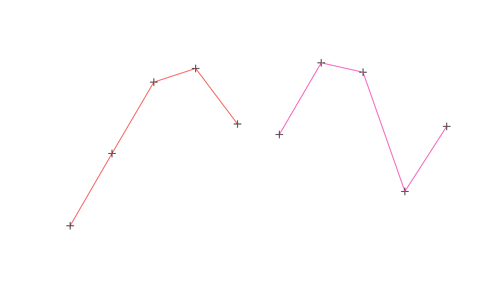

An extension of SpatialPointsDataFrame by including
"TimeOrderedRecords". The records within the data frame are
explicitly ordered by DateTime data within IDs.
Objects can be created by calls of the form
trip(obj="SpatialPointsDataFrame", TORnames="TimeOrderedRecords").
The object contains all the slots present within a
SpatialPointsDataFrame, particularly data which
contains columns of at least those specified by TOR.columns.
trip for examples of directly using the class.
trip-accessors describes methods for accessing information on
trip objects.
showClass("trip")#> Class "trip" [package "trip"] #> #> Slots: #> #> Name: TOR.columns data coords.nrs coords bbox proj4string #> Class: character data.frame numeric matrix matrix CRS #> #> Extends: #> Class "TimeOrderedRecords", directly #> Class "SpatialPointsDataFrame", directly #> Class "SpatialPoints", by class "SpatialPointsDataFrame", distance 2 #> Class "Spatial", by class "SpatialPointsDataFrame", distance 3 #> Class "SpatialVector", by class "SpatialPointsDataFrame", distance 3d <- data.frame(x=1:10, y=rnorm(10), tms=Sys.time() + 1:10, id=gl(2, 5)) sp::coordinates(d) <- ~x+y ## this avoids complaints later, but these are not real track data (!) sp::proj4string(d) <- sp::CRS("+proj=laea +ellps=sphere", doCheckCRSArgs = FALSE) tr <- trip(d, c("tms", "id")) summary(tr)#> #> Object of class trip #> tripID ("id") No.Records startTime ("tms") endTime ("tms") tripDuration #> 1 1 5 2020-06-15 02:14:08 2020-06-15 02:14:12 4 secs #> 2 2 5 2020-06-15 02:14:13 2020-06-15 02:14:17 4 secs #> tripDistance meanSpeed maxSpeed #> 1 9.039498 8135.548 11136.84 #> 2 7.197242 6477.518 10840.37 #> #> Total trip duration: 8 seconds (0 hours, 8 seconds) #> #> Derived from Spatial data: #> #> Object of class SpatialPointsDataFrame #> Coordinates: #> min max #> x 1.000000 10.000000 #> y -2.634372 1.542944 #> Is projected: TRUE #> proj4string : [+proj=laea +ellps=sphere] #> Number of points: 10 #> Data attributes: #> tms id #> Min. :2020-06-15 02:14:08 1:5 #> 1st Qu.:2020-06-15 02:14:10 2:5 #> Median :2020-06-15 02:14:13 #> Mean :2020-06-15 02:14:13 #> 3rd Qu.:2020-06-15 02:14:15 #> Max. :2020-06-15 02:14:17 #>plot(tr)lines(tr)dim(tr)#> [1] 10 2names(tr)#> [1] "tms" "id"#> #> Object of class trip #> tripID ("id") No.Records startTime ("tms") endTime ("tms") tripDuration #> 1 2 5 2020-06-15 02:14:13 2020-06-15 02:14:17 4 secs #> #> data.columns data.class #> 1 tms POSIXct **trip DateTime** #> 2 id factor **trip ID** #>as.data.frame(tr)#> x y tms id #> 1 1 -0.9627164 2020-06-15 02:14:08 1 #> 2 2 -2.6343717 2020-06-15 02:14:09 1 #> 3 3 0.2931122 2020-06-15 02:14:10 1 #> 4 4 -2.2314015 2020-06-15 02:14:11 1 #> 5 5 -1.4281767 2020-06-15 02:14:12 1 #> 6 6 1.5429442 2020-06-15 02:14:13 2 #> 7 7 1.1408577 2020-06-15 02:14:14 2 #> 8 8 0.5898365 2020-06-15 02:14:15 2 #> 9 9 -2.2504806 2020-06-15 02:14:16 2 #> 10 10 -0.5572741 2020-06-15 02:14:17 2tr[1:3, ]#> #> Object of class trip #> tripID ("id") No.Records startTime ("tms") endTime ("tms") tripDuration #> 1 1 3 2020-06-15 02:14:08 2020-06-15 02:14:10 2 secs #> #> data.columns data.class #> 1 tms POSIXct **trip DateTime** #> 2 id factor **trip ID** #>tr[, 1]#> trip-defining Date or ID columns dropped, reverting to SpatialPointsDataFrame #>#> class : SpatialPointsDataFrame #> features : 10 #> extent : 1, 10, -2.634372, 1.542944 (xmin, xmax, ymin, ymax) #> crs : +proj=laea +ellps=sphere #> variables : 1 #> names : tms #> min values : 1592187248.60566 #> max values : 1592187257.60566tr[[1]]#> [1] "2020-06-15 02:14:08 UTC" "2020-06-15 02:14:09 UTC" #> [3] "2020-06-15 02:14:10 UTC" "2020-06-15 02:14:11 UTC" #> [5] "2020-06-15 02:14:12 UTC" "2020-06-15 02:14:13 UTC" #> [7] "2020-06-15 02:14:14 UTC" "2020-06-15 02:14:15 UTC" #> [9] "2020-06-15 02:14:16 UTC" "2020-06-15 02:14:17 UTC"